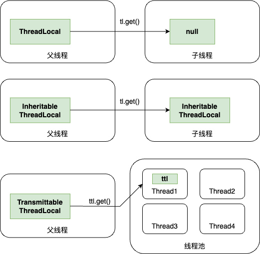

ThreadLocal机制
ThreadLocal
为什么要有 ThreadLocal
为了解决多线程存在「线程安全」的问题——线程并发对同一临界区的共享资源进行访问而导致的内存数据安全问题，才引入的 ThreadLocal——每个线程拥有自己线程隔离的「本地变量」。
ThreadLocal 中弱引用问题
要说清楚 ThreadLocal 中的弱引用机制，还要从 ThreadLocal 的设计初衷讲起。为了解决多线程线程安全问题，每一个 Thread 中都有一个 ThreadLocalMap，其中 key 为 ThreadLocal 本地变量，value 为想要存放的具体值。为了实现线程安全，不允许用户直接接触 ThreadLocalMap 向里面 put Entry，而是通过 ThreadLocal 的 API：get、set、remove 来间接操作。具体的实现是，ThreadLocalMap 作为 ThreadLocal 中的静态内部类，ThreadLocal 为 Map 提供了外层的用户封装，而将可能出现的线程冲突交由内部实现来解决。
这就造成了当使用者没有正确的通过 remove 方法将 ThreadLocal 删除而通过将 ThreadLocal 变量置为 null 时，就会造成这个 Entry 永远存在于 ThreadLocalMap 中且无法被访问和删除，进而造成 OOM 的风险。
为了避免 OOM，设计者将 ThreadLocalMap 中的 key(ThreadLocal引用) 设置为弱引用，也就是没有外部引用时会被 GC 自动回收。
但是就算是通过弱引用的设计方式，也无法完全避免 OOM 的发生。这是因为虽然 ThreadLocalMap 会通过线性探测清理、启发式清理的方式清除脏 Entry，但实际并不能保证脏 Entry 被清除。所以呼吁使用者在使用完 ThreadLocal 变量之后一定要通过 remove 手动回收。
ThreadLocal 的进化
画个图来说明 ThreadLocal、InheritableThreadLocal、TransmittableThreadLocal 之间的区别：

ThreadLocal
为了避免线程安全而维护的本地变量副本。
InheritableThreadLocal
使用 ThreadLocal 时在异步场景下无法给子线程提供父线程所创建的数据副本，由此才有了 InheritableThreadLocal 登场：
1 | public class InheritableThreadLocalDemo { |
原理
在 Thread 类中维护了两个 hashMap：
1 | ThreadLocal.ThreadLocalMap threadLocals = null; |
在父线程中通过new Thread()创建子线程时，Thread 的构造方法会复制父线程的 inheritThreadLocals 为子线程的 inheritableThreadLocals 赋值。
TransmittableThreadLocal
在实际项目中使用异步处理都采用线程池，线程池是 Thread 复用的逻辑，而 InheritableThreadLocal 是在new Thread()时才进行本地变量的传递，这时候就不灵了。
因为需求由「父子线程的 ThreadLocal 值传递」变成了「任务提交给线程池时的 ThreadLocal 传递到任务执行时」。
阿里巴巴开源组件：https://github.com/alibaba/transmittable-thread-local
TransmittableThreadLocal 类继承自 InheritableThreadLocal，就解决了在线程池以及线程复用的情况下的本地变量传递问题。
TransmittableThreadLocal 使用
1 | <dependency> |
实例代码：
这里能体现出 TransmittableThreadLocal 和 InheritableThreadLocal 的区别——向线程池中提交任务时由主线程先设置 ttl 的值，在线程池中执行任务的线程能够得到传递的 ttl 值。
保证线程池中传递值的 2 种方式：
- 使用 TtlRunnable 和 TtlCallable 修饰传入线程池的 Runnable 和 Callable 任务；
- （更推荐）使用 TtlExecutors 修饰线程池。
1 | public static void main(String[] args) { |
执行结果：
1 | pool-1-thread-1 ---- 主线程的值：0 |
在线程池中线程出现复用时，如果不使用 TransmittableThreadLocal 存储本地变量副本，那在复用时会造成本地变量的「数据污染」，也就是错误地保留了该 Thread 的历史副本，导致读到错误的值。